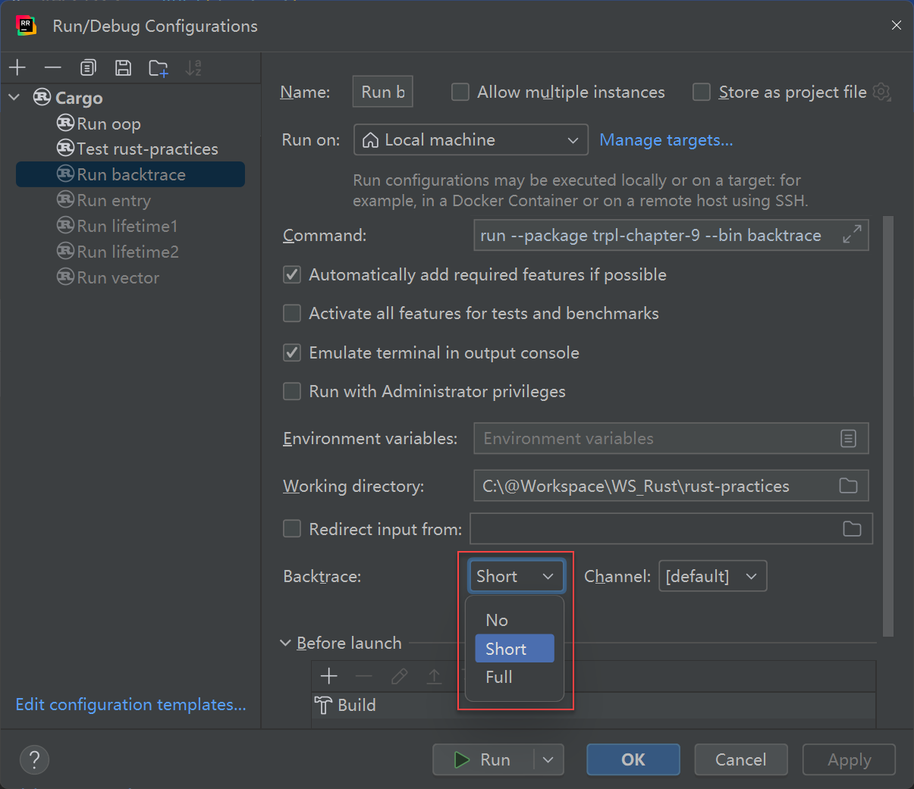

Rust 错误处理：panic! 和 Result

绝大多数编程语言都有异常处理机制， Rust 没有异常，而是使用了：可恢复错误 Result<T, E> 和不可恢复（遇到错误时停止程序执行）错误 panic! 。本文，我们研究一下 Rust 是如何进行错误处理的。
1. panic! 与不可恢复的错误
panic 是“恐慌”的意思， panic! 是一个宏，当程序遇到不可恢复的致命错误时，主动抛出，和 throw exception 类 似：
1 | fn main() { |
2. 使用 panic! 的 backtrace
backtrace 就是调用栈回溯，默认情况下程序 panic! 的时候不会打印 backtrace 的。让我们先抛出一个 panic：
1 | fn main() { |
越界访问数组会导致 panic!，报错内容是：
1 | PS C:\@Workspace\WS_Rust\rust-practices\crates\trpl-chapter-9> cargo run --bin backtrace |
这里没有我们想要的 backtrace 信息。如果想要看到它，需要配置一个环境变量 RUST_BACKTRACE ，通常有两个值可供选择： 1 和 FULL ，前者是打印“简化版”调用栈，后者打印完整调用栈。设置这个变量的方法是：
-
临时设置（仅当前命令行有效）：
set RUST_BACKTRACE=FULL -
永久设置：修改系统环境变量
如果你使用 IDE，则可以在 IDE 的运行配置中找一个适当的地方添加进去。RustRover 默认是直接开启在，这可以从它的 Run Conifugration 里看到：

打开 backtrace 后，再抛出 panic! 的时候就会打印栈回溯信息：
1 | C:\@Workspace\WS_Rust\rust-practices\crates\trpl-chapter-9>cargo run --bin backtrace |
3. Result 与可恢复的错误
Rust 的 Result 与其他语言里的异常机制有一个非常显著的差异：Result 是一个普通的枚举类型，如果一个函数可能会发生错误，Rust 是让这个函数把发生的错误封装成 Result 作为返回值返回！这是很不同的一种处理方式。 传统异常（exception）是：“让错误脱离正常返回路径，通过另一条隐式控制流传播”，而 Rust 的 Result 本质上是：“把失败显式编码进函数返回值类型里” 。让我们通过代码来体会一下。
1 | use std::fs::File; |
File ::open 方法的 [ 官方文档 ] 给出的函数签名显示，它的返回值是 Result<File> 类型，于是，上面的代码使用模式匹配把返回值进行拆解：Ok 表示成功打开了文件，可获得包裹在里面的 File 实例；Err 表示失败，可获得包裹在里面的错误信息，然后做进一步的应对处理，此处是直接 panic! 了。
你可以明显地感觉到这与抛出异常是不同的， 异常是走了异常处理独立的路径，而 Rust 则是把可能的错误包裹到返回值里让调用方去处理（当然它也可以再向上返回） 。
上面示例中的错误处理可能有些太“武断”，如果你想做粒度更细，针对性更强的错误处理，可以针对不同的错误类型进一步展开编写应对逻辑：
1 | use std::fs::File; |
虽然不是异常处理，但上述代码很好地展示了如何应对可恢复的错误，你可以看到：第 11 行，当错误类型是 NotFound 时，我们的应对措施是“创建它”，这就是很好的错误处理方式，也是“可恢复的错误”的一个典型示例。
4. 错误处理的快捷方式：unwrap 和 expect
Result 搭配模式配置已经是很优雅的错误处理方式了，但每次都显式地书写 Ok 和 Err 未必都是必要的，在很多时候，我们可能需要“一套标准流程”，例如：如果是 Ok，拿到返回的实际值，如果是 Err 直接调用 panic!，像这种固定流程可以简写为一个函数，就是 unwrap ！下面的代码就是一个例子，你可以鲜明地看出来：语法又精简了一步：
1 | use std::fs::File; |
另一个与 unwrap 非常接近的方法是 expect 方法，unwrap 没有参数，expect 有一个参数，可以让用户自己来写 panic! 时的错误信息：
1 | use std::fs::File; |
不过这里的真得要吐槽一个这个函数的命名，太糟糕了！为什么取这个名字？因为它的参数是错误信息，配上 expect 这个名字可读性很差。
5. 错误传播
跟异常一样，错误是层层 escalate 的，如果当前的层级（函数）搞不定这个错误，就上升到上一级（调用方）去处理，上一级处理不了，就再往上传播。有时候并不是处理不了，而是在不同的层级上有相应的应对逻辑要执行。不过，从以往的编程经验来看，层层 escalate 错误的情形并不常见。此外，补充一个设计技巧或规范：如果是异常体系，你确定需要向上传播异常时，在不同的层面要分装对应抽象层级的异常类，例如：在底层时可能是一个“文件无法打开”一类的错误，到了某个业务类的时候，比如 config .getInt(“xxx”) 如果报错，可能会封装一个“无法读取配置”的异常。但这在 Rust 里不适用，因为它没有类型化错误信息，总是使用 Result 一种类型。
下面的例子展示了一个函数如何针对文件打开失败的错误进行二次传播：
1 | use std::io; |
由于在打开文件（第 6 行）和读取文件内容（第 15 行）都有可能报错，上述方法在执行这两个操作时需要分别针对返回的 Result 进行模式匹配处理，其中在遇到 Err 时，统一把它们再次封装成 Err 示例并返回，所以 read_username_from_file 这个方法的返回值也变成了 Result，这样，它的调用方在调用它时，也需要处理它返回的 Result，从而形成一种“错误传播”机制。
6. ? 运算符
由于错误传播是很常用的一种机制，如果总是像上面那样“拆解 Result 之后取出 e 再包装回去”会很啰嗦，因此， Rust 提供了一种简化的书写方式： ? 运算符。同样是上面的代码，使用 ? 运算符实现就会变成：
1 | use std::io; |
怎么理解这个 ? 呢？对比着上一版实现就很好解释，以 open 方法后面的 这个 ? 为例：它的意思就是说：如果这个方法返回的是 Ok，那就取出 Ok 里的值赋给 f，如果是 Err，那整个函数就直接在此处返回了，返回的是从 open 方法报出来的 Err。同样的， read_to_string 方法也是如此，不过，稍有不同的是：它没有返回值，而是靠引用参数“带”回返回值，这里可能会有一个让人疑惑的地方：我们能理解 open 方法会取出 Ok 里的值并返回，这是固定逻辑，可以自动化实现，但 read_to_string 的逻辑是把 Ok 里的值取出来赋给引用参数 s， ? 运算符是怎么知道这逻辑的呢？或者说它是怎么知道要这样处理呢？
这是初次接触 ? 运算符时很容易产生的一个错误判断。实际情况是：s 从来没有出现在由 ? 运算符掌管的模式匹配逻辑中，因为： f.read_to_string(&mut s)? 展开的形式是这样的：
1 | match f.read_to_string(&mut s) { |
你可以查看一下 read_to_string 方法的官方文旦，它的返回值类型其实是 Result<usize, io::Error> ，其中 usize 就是 Ok 时的返回值，也就是上面展开代码中的 v，它表示读取了多少字节，这个值其实被抛弃了。“s 被赋予了读取的字符串”这个动作是 read_to_string 方法里面的逻辑，与返回的 Result 无关，它的 Result 并不包含读取到的文件内容，文件内容是靠引用参数 s 从函数里面带出来的。
? 运算符更妙的一个地方是你可以用方法链的形式连续调用，实现更简洁的表达。上面的例子我们还可以进一步简化为下面的样子：
1 | use std::io; |
似乎不需要再过多解释了，前面的两个版本身就是解释了。简单地说明一下吧：open 方法返回的是 Result， ? 运算符自动拆解 Result 取出里面 Ok 包裹的值并返回（如果是 Err，直接拿 Err 实例返回），因为返回的是一个 File 实例，所以又可以在它上面直接调用 read_to_string 方法，这个方法返回的也是 Result 类型，末尾再次使用 ? 运算符自动拆解它的返回值。
尽管 ? 运算符是一个很优雅便捷的语法，但是，你应该也注意到了：由于它的处理是一种固化的模式：就是展开 Result，取出 Ok 中的“值”并返回，或是取出 Err 中的“错误”并返回，特别是返回 Err 这个分支，它是会让函数立即退出的，所以，一个函数一旦在函数体内使用了 ? 运算符，那这个函数就必须得返回 Result（或 Option) 类型，否则就会报 “the ? operator can only be used in a function that returns Result or Option ” 错误。考虑到错误传播机制可以上升到最顶层的 main 函数，因此，Rust 特意允许 main 函数也可以返回 Result (默认返回的是 () 类型），就像下面这样：
1 | fn main() -> Result<(), Box<dyn Error>> { |
Rust 错误处理：panic! 和 Result